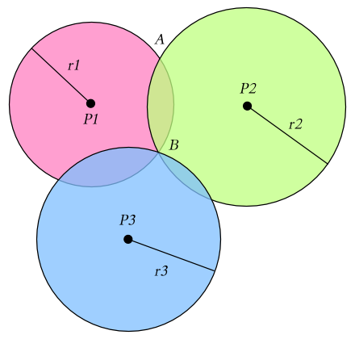
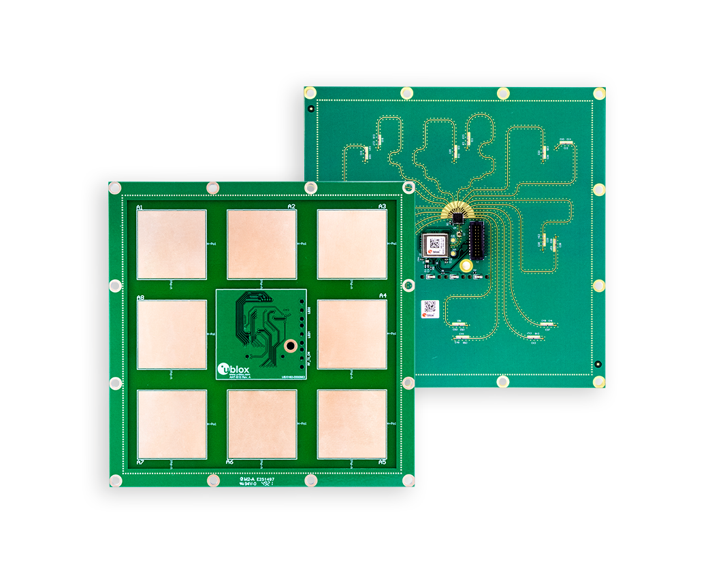

Analiza porównawcza przykładowych metod
pozycjonowania wewnątrzbudynkowego
z zastosowaniem modułu ESP32
i wybranych standardów komunikacji radiowej
Autor: inż. Mikołaj Tkaczyk
Promotor: dr inż. Artur Wiliński
Problem badawczy
Która z metod pozycjonowania daje najlepsze rezultaty?
Czy może
ma sens próba stworzenia nowej metody?
Dziedzina badań
Aktywne rozpoznawanie pozycji urządzenia końcowego
w określonym zakresie budynku na bazie parametrów połączenia
radiowego.
Po co?
Wdrożenie rozwiązania u obecnego pracodawcy
w kierunku monitorowania aktywności pracowników.
Monitorowanie przebiegu treningu psich sportów (flyball, agility).
(Zależnie od uzyskanych wyników)

Jakie urządzenia zostaną użyte?
Jakie urządzenia zostaną użyte?

ESP32 (ESP-WROOM-32)
Jakie urządzenia zostaną użyte?

Raspberry Pi 3B+
Triangulacja
Triangulacja
- Lateracja
Triangulacja
- Lateracja
- Angulacja
Lateracja
Lateracja
Lateracja
- Układ równań liniowych
Lateracja
- Układ równań liniowych
- Metoda najmniejszych kwadratów
Lateracja
- Układ równań liniowych
- Metoda najmniejszych kwadratów
- Rozkład według wartości osobliwych
Lateracja
- Układ równań liniowych
- Metoda najmniejszych kwadratów
- Rozkład według wartości osobliwych
- Inne metody takie jak środek ciężkości figury opartej o pole przecięcia
Jak znaleźć odległość?
Jak znaleźć odległość?
Na bazie parametru RSSI połączenia Bluetooth Low Energy. Istnieją różne metody przeliczania RSSI na odległość:
Jak znaleźć odległość?
Na bazie parametru RSSI połączenia Bluetooth Low Energy. Istnieją różne metody przeliczania RSSI na odległość:
- Prosty wzór z funkcji wykładniczej
Jak znaleźć odległość?
Na bazie parametru RSSI połączenia Bluetooth Low Energy. Istnieją różne metody przeliczania RSSI na odległość:
- Prosty wzór z funkcji wykładniczej
- Utworzenie funkcji przez regresję
Jak znaleźć odległość?
Na bazie parametru RSSI połączenia Bluetooth Low Energy. Istnieją różne metody przeliczania RSSI na odległość:
- Prosty wzór z funkcji wykładniczej
- Utworzenie funkcji przez regresję
- Powiązanie wielu parametrów RSSI do stworzenia funkcji dwuwymiarowej
Jak znaleźć odległość?
Time of Arrival - Time Difference of Arrival - Time of Flight
Jak znaleźć odległość?
Time of Arrival - Time Difference of Arrival - Time of Flight
Bazuje na prędkości fali radiowej i różnicy czasu wysłania -
otrzymania.
Trudny temat ze względów synchronizacji i
dokładności pomiarów.
Angulacja
Angulacja
Analiza sceny
Analiza sceny
Fingerprinting
Detekcja zbliżenia
Detekcja zbliżenia
NFC - RFID
Postęp prac:
Postęp prac:
- skonfigurowano środowisko deweloperskie dla ESP32
Postęp prac:
- skonfigurowano środowisko deweloperskie dla ESP32
- przeprowadzono testy łączności BLE i WiFi 2.4GHz
Postęp prac:
- skonfigurowano środowisko deweloperskie dla ESP32
- przeprowadzono testy łączności BLE i WiFi 2.4GHz
-
zebrano i przyswojono część bibliografii,
głównie o metodach triangulacji, zamianie RSSI na odległość
oraz sposobach machine learningowych
Postęp prac:
- skonfigurowano środowisko deweloperskie dla ESP32
- przeprowadzono testy łączności BLE i WiFi 2.4GHz
-
zebrano i przyswojono część bibliografii,
głównie o metodach triangulacji, zamianie RSSI na odległość
oraz sposobach machine learningowych -
napisano pierwszy rozdział prezentujący problem
i obecnie używane rozwiązania
Postęp prac:
- skonfigurowano środowisko deweloperskie dla ESP32
- przeprowadzono testy łączności BLE i WiFi 2.4GHz
-
zebrano i przyswojono część bibliografii,
głównie o metodach triangulacji, zamianie RSSI na odległość
oraz sposobach machine learningowych -
napisano pierwszy rozdział prezentujący problem
i obecnie używane rozwiązania -
przeprowadzono serię pomiarów RSSI dla środowiska testowego,
na bazie którego zostaną przeprowadzone obliczenia
Postęp prac:
- skonfigurowano środowisko deweloperskie dla ESP32
- przeprowadzono testy łączności BLE i WiFi 2.4GHz
-
zebrano i przyswojono część bibliografii,
głównie o metodach triangulacji, zamianie RSSI na odległość
oraz sposobach machine learningowych -
napisano pierwszy rozdział prezentujący problem
i obecnie używane rozwiązania -
przeprowadzono serię pomiarów RSSI dla środowiska testowego,
na bazie którego zostaną przeprowadzone obliczenia - obecnie stan pracy to opisywanie istniejącej literatury

Konspekt pracy:
- Spis treści
- Wstęp - opisuący temat
- Zapoznanie z bibliografią i istniejącymi badaniami
- Opis implementacji środowiska testowego
- Sposób przeprowadzenia badań
-
Praca nad materiałem badawczym
- Konwersja RSSI - odległość
- Metody trilateracji
- Fingerprinting za pomocą klasyfikatorów ML
- Metody zwiększania dokładności i odporności na zmiany środowiska
- Wyniki i podsumowanie pracy
- Bibliografia
- Sensor fusion for indoor positioning system through improved RSSI and PDR methods - Hamidreza Mehrabian, Reza Ravanmehr | Future Generation Computer Systems 138 (2023) 254–269
- TTSL: An indoor localization method based on Temporal Convolutional Network using time-series RSSI - Bing Jia, Jingbin Liu, Tao Feng, Baoqi Huang, Thar Baker, Hissam Tawfik | Computer Communications 193 (2022) 293–301
- When RSSI encounters deep learning: An area localization scheme for pervasive sensing systems - Zhishu Shen, Tiehua Zhang, Atsushi Tagami, Jiong Jin | Journal of Network and Computer Applications 173 (2021) 102852
- RSSI quantization and genetic algorithm based localization in wireless sensor networks - Qianqian Rena, Yang Zhang, Ioanis Nikolaidis, Jinbao Li, Yu Pan | Ad Hoc Networks 107 (2020) 102255
- Human positioning estimation method using received signal strength indicator (RSSI) in a wireless sensor network - Kimio Oguchi, Shou Marutab, Dai Hanawa | Procedia Computer Science 34 ( 2014 ) 126 – 132
- An Empirical Comparison of Machine Learning Models for Time Series Forecasting - Nesreen K. Ahmed , Amir F. Atiya, Neamat El Gayar, Hisham El-Shishiny | Econometric Reviews Volume 29, 2010 - Issue 5-6 Pages 594-621
- MyLib: Smart Library Indoor Navigation Using Bluetooth Low Energy with Triangulation Method - Tri Nopiani Damayanti, Dadan Nur Ramadan, Indah Mutia Utami | INTL JOURNAL OF ELECTRONICS AND TELECOMMUNICATIONS, 2022, VOL. 68, NO. 2, PP. 293-298
- Increasing RSSI Localization Accuracy with Distance Reference Anchor in Wireless Sensor Networks - Ugur Bekcibasi, Mahmut Tenruh | Acta Polytechnica Hungarica Vol. 11, No. 8, 2014
- Experimental comparison of RSSI-based localization algorithms for indoor wireless sensor networks - Giovanni Zanca, Francesco Zorzi, Andrea Zanella, Michele Zorzi | REALWSN '08: Proceedings of the workshop on Real-world wireless sensor networks April 2008 Pages 1–5
- Is RSSI a Reliable Parameter in Sensor Localization Algorithms – An Experimental Study - Ambili Thottam Parameswaran, Mohammad Iftekhar Husain, Shambhu Upadhyaya | 2009
- Kolban's Book on ESP32 - Neil Kolban | May 2017
- Determination of a position in three dimensions using trilateration and approximate distances - William S. Murphy Jr. and Willy Hereman | November 28, 1999
- Indoor Positioning Algorithm Based on the Improved RSSI Distance Model - Guoquan Li, Enxu Geng, Zhouyang Ye, Yongjun Xu, Jinzhao Lin, Yu Pang | Sensors (Basel) 2018 Aug 27;18(9):2820
- Semantic Node-RED for Rapid Development of Interoperable Industrial IoT Applications - Aparna Saisree Thuluva, Darko Anicic, Sebastian Rudolph, Malintha Adikari | Semantic Web, vol. 11, no. 6, pp. 949-975, 2020
Serdecznie dziękuję za uwagę
Serdecznie dziękuję za uwagę
Czekam na ewentualne pytania